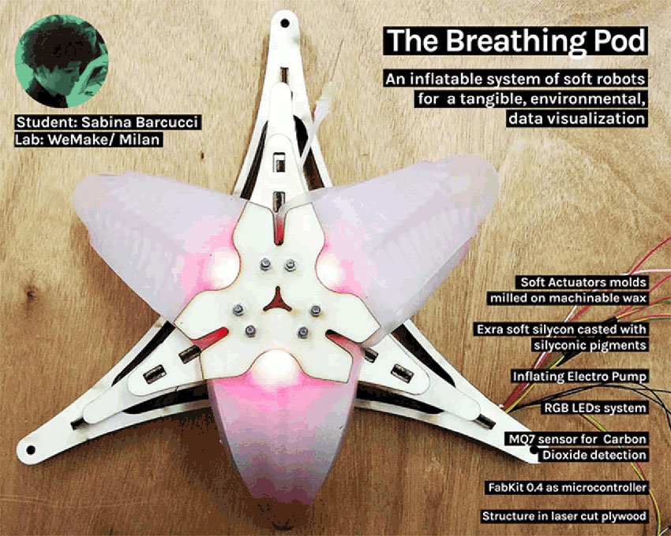

Project development
The Breathing Pod

Documentation structure
1- General design
2- General structure and their iterations
3- Molding
4- Casting iteration and silycon extra soft in depht
5- Electronics and wiring
6- Results
7- Missing elements, failures and future implementation
1 // General design
The breathing pod is a device made by a general plywood structure with an electro air pump in its center that inflates air into 3 soft actuators casted in extra soft silycon. The pump is controlled by an air quality sensor, the MQ7, that cyclically reveals the level of Carbon Dioxide detected in the air nearby and make the pump and a set of RGB LEDs behaving according to the data detection of the sensor. In the original project, those detected data should have been sent to an online data repository for citizen science, throug the use of a micro wifi embedded electronics feleer.
A FabKit is enough to control the whole system. The only added boards are those necessary to convert current voltage from a general 12V battery that would have powered all boards and the pump. For the final presentation I hadn't enough time to implement these feature, as the one for data online trasmission, because I used just the bench supply for the pump and a 5V puwer supply for the FabKit.
2 // General structure and their iterations